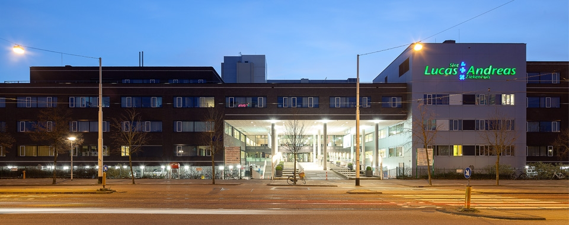
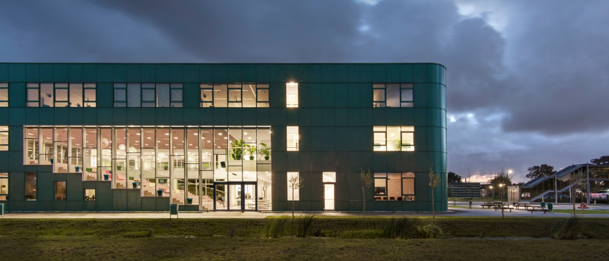

Hobbies
Mijn Hobbies zijn gamen, sporten, muziek luisteren en vooral basketballen met mijn vrienden.
Ik zit niet op een sport en heb momenteel ook geen baan. Wel wil ik er een binnenkort.

Hieronder staat meer informatie over mij.
klik hier voor alle websitesMijn Hobbies zijn gamen, sporten, muziek luisteren en vooral basketballen met mijn vrienden.
Ik zit niet op een sport en heb momenteel ook geen baan. Wel wil ik er een binnenkort.
Ik ben geboren in het Sint Lucas Andreas ziekenhuis in Amsterdam. Tegenwoordig heet die OLVG west. Ik ben een man en heb een Roemeense/Nederlandse nationaliteit.Ik ga 24/7 naar de basic-fit.#NEVERSKIPLEGDAY
Ik zit nu in 4VWO en heb een N&T/N&G profiel gekozen. Mijn keuze vakken zijn Biologie, Duits en Informatica. Als ik klaar ben met VWO wil ik gaan studeren bij de universiteit. Wat en waar precies weet ik nog niet.
